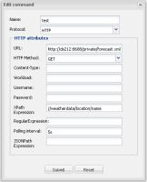

Hi
Since Google weather information API no longer works, i want to use YR.no instead.
I want to extract information from below site:
http://www.yr.no/place/Sweden/Västra_Götaland/Torslanda/forecast.xml
To view it please check http://www.yr.no/place/Sweden/Västra_Götaland/Torslanda/
I guess i should use a HTTP command and add the adress to URL.
I think to use "GET" in "Http Method", but what should i write in "Xpath Expression" to get let´s say the temperature value for example today etc.
Best Regards
Henrik
{kind=link}
|
That URL does not return a URL. Sites like the one you refer to are not very well suited for parsing. |
|
Thanks Pe Zanstra for your quick replay. Explain for me what you mean with "That URL does not return a URL" http://www.yr.no/place/Sweden/Västra_Götaland/Torslanda/forecast.xml Wunderground is a good alternative but doesn´t have weather info at my area so good. |
|
Sorry, I missed the first URL. I am busy right now, but will give you an example for the Xpath later tonight |
|
Thanks for your support, I try to learn step by step how to get the most out of OR. |
|
This xml is more complex than I ever handled before. So I couldn't find a quick solution. The Wunderground site I use gives me simple real time information. Yours has several more or less identical periods. Do you need all the information for the multiple time slots? (edit: added xml header which was invisible in browser) <?xml version="1.0" encoding="utf-8"?> <weatherdata> <location> <name>Torslanda</name> <type>Town</type> <country>Sweden</country> <timezone id="Europe/Stockholm" utcoffsetMinutes="60" /> <location altitude="26" latitude="57.72432" longitude="11.77013" geobase="geonames" geobaseid="2667809" /> </location> ....lines removed <forecast> <tabular> <time from="2013-03-28T19:00:00" to="2013-03-29T00:00:00" period="3"> <!-- Valid from 2013-03-28T19:00:00 to 2013-03-29T00:00:00 --> <symbol number="3" name="Partly cloudy" var="mf/03n.54" /> <precipitation value="0" /> <!-- Valid at 2013-03-28T19:00:00 --> <windDirection deg="352.2" code="N" name="North" /> <windSpeed mps="3.5" name="Gentle breeze" /> <temperature unit="celsius" value="1" /> <pressure unit="hPa" value="1019.5" /> </time> <time from="2013-03-29T00:00:00" to="2013-03-29T06:00:00" period="0"> <!-- Valid from 2013-03-29T00:00:00 to 2013-03-29T06:00:00 --> <symbol number="2" name="Fair" var="mf/02n.58" /> <precipitation value="0" /> <!-- Valid at 2013-03-29T00:00:00 --> <windDirection deg="103.1" code="ESE" name="East-southeast" /> <windSpeed mps="4.9" name="Gentle breeze" /> <temperature unit="celsius" value="-2" /> <pressure unit="hPa" value="1018.5" /> </time> <time from="2013-03-29T00:00:00" to="2013-03-29T06:00:00" period="0"> .... Afaik the Xpath to get the name off the location should be //weatherdata/location/name/
Can't get that to work, while I have similar example: <response> <current_observation> <wind_gust_kph>13.4</wind_gust_kph> <pressure_mb>1011</pressure_mb> <pressure_in>29.86</pressure_in> <pressure_trend>0</pressure_trend> </current_observation> </response> That works well with XPATH //response/current_observation/wind_gust_kph
|
|
Maybe because they have a typo in their tag name? <wheatherdata> |
|
You got me! That was a misspelling on my side in the example as represented here. In my post I here typed the XPATH from the top of my head |
|
 Now the location information does appear on screen. So apparently the XML from the Swedish site is somehow different from the file I read through Tomcat from my private directory. (I vaguely remember having had this experience before but did not yet find a note about that in my piles) I can now also read the first occurrence of windSpeed, which is held in an attribute named mps. Attributes are referenced via an "@", The XPATH has to be: //@mps
I have as yet to find out how to select the n-th occurrence. (And the issue with the live XML of course) |
|
Sorry not to hear back from you |
|
Sorry fro my lack of response PE ZANSTRA. Do you need to copy the XML file to your harddrive to been able to read it? Best Regards |
|
When you use //@mps in XPATH you get the first comming windspeed? |
|
Indeed, you do get the first occurence. I vaguely remember someone dealing with the n-th occurence last year, but I haven't been able yet to spot that. Another question I raised was what you actually want to achien with thes wheatherdata? |
|
Hi Pieter I try to create my own look a like Gira Home Server interface. Needed data to read: /Henrik |
|
I found the solution for the selection of the n-th occurence of a value. In your specific case for the wind speed try the following XPATH expression if you want the second measurement: //weatherdata/forecast/tabular/time[2]/windSpeed/@mps |
|
Great news PE ZANSTRA. I guess i just use: |
|
Yes, //weatherdata/forecast/tabular/time[2]/temperature/@value
should work. I am in the process of writing a small Howto for Xpath. Unfortunately I don't know yet how to make that visible for users. |
|
Here is the page that describes how to deal with XPath |
|
Did you manage to get this working directly from the wheather URL in the meantime? |
|
Dear PE ZANSTRA It works perfectly for me directly from the URL, i don´t need to download the XML. The only problem is that i don´t had time to work with my project lately. I will let you know my progress as soon as im up and running again! Best Regards |
|
Thanks for the confirmation |
{kind=link}